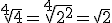
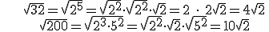
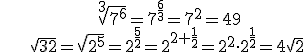
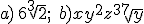

Números reales
Radicales
Un radical es una raíz cuadrada que no puede ser reducida a un número entero. Por ejemplo, √4 = 2 no es un radical pero √5 sí, porque no es un número entero. Se podría usar la calculadora para aproximarlos pero, en lugar de eso, frecuentemente dejamos las respuestas en forma de raíz, como radical. Debes ser capaz de simplificar expresiones con radicales.
Dos radicales son equivalentes si expresan el mismo número:

Se puede simplificar radicales así:

O podemos usar exponentes fraccionarios para simplificarlas:

Ejercicio. Simplifica estos radicales:
a) 3√432 =
b) 7√(x7y15z21) =
Soluciones:

Obra publicada con Licencia Creative Commons Reconocimiento No comercial Compartir igual 3.0